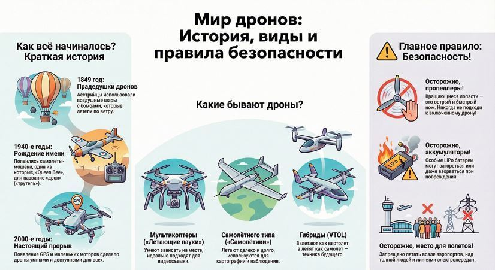

Мир дронов: история, виды и правила безопасности
Привет! Сегодня мы начинаем путешествие в удивительный мир беспилотников, или, как их чаще называют, дронов. Это не просто крутые игрушки, а настоящие летательные аппараты, которые меняют наш мир!
Как всё начиналось? Немного истории
Ты удивишься, но первые попытки создать что-то похожее на дрон предприняли еще в 1849 году! Австрийцы придумали запускать воздушные шары с бомбами на врага. Управлять ими было нельзя, они просто летели по ветру. Сложно назвать это дроном, но идея уже витала в воздухе!
Потом, в 1940-е годы, появились первые самолеты-мишени. Их использовали для тренировки летчиков и зенитчиков. Интересный факт: английское слово «Drone» (что значит «трутень») пошло от названия одного такого самолета-мишени — «Queen Bee» («Пчелиная матка»).
А настоящий прорыв случился в 2000-х годах. Появились маленькие и мощные моторчики, камеры, датчики и GPS. Дроны стали умными, доступными и превратились из военной техники в наших повседневных помощников.
Какими они бывают? Не только квадрокоптеры!
Когда ты слышишь слово «дрон», ты наверняка представляешь себе квадрокоптер с четырьмя пропеллерами. Но на самом деле их гораздо больше!
✔ «Летающие пауки» (Мультикоптеры). Это как раз те самые аппараты с несколькими винтами (4, 6, 8). Они умеют зависать на месте, плавно двигаться во всех направлениях — идеально для съемки видео.
✔ «Самолетики» (Самолетного типа). Выглядят как маленькие самолеты с одним крылом. Они не умеют зависать, зато летают очень далеко и долго. Их используют для картографии или наблюдения за большими территориями.
✔ «Гибриды» (VTOL). Совмещают лучшее: могут взлетать и садиться вертикально, как вертолет, а потом лететь быстро и далеко, как самолет. Техника будущего!
Их используют везде: для съемки крутых роликов, доставки пиццы и лекарств, осмотра мостов и труб, в сельском хозяйстве и даже в гонках — есть специальный вид спорта «дрон-рейсинг», где пилоты в шлемах с VR-очками носятся на бешеной скорости по трассе.

Главное правило: Безопасность — на первом месте!
Запомни раз и навсегда: дрон — это не игрушка. Это техническое устройство, которое может быть опасным, если не соблюдать правила.
Осторожно, опасно!
✔ Пропеллеры. Вращающиеся лопасти — это острый и очень быстрый нож. Никогда не подходи к включенному дрону! Даже маленький пропеллер может нанести серьезную травму.
✔ Аккумуляторы. В дронах стоят особые батареи (LiPo). Их нельзя бить, протыкать, перезаряжать или оставлять на солнце. Они могут загореться или даже взорваться! Обращайся с ними как с хрупким стеклом.
✔ Место для полетов. Нельзя запускать дрон где попало! Запрещено летать возле аэропортов, над толпой людей, рядом с линией электропередач и в городах. Лучше всего — на открытых полях или на специальных площадках.
Перед каждым полетом нужно делать предполетную проверку (Pre-flight check):
1. Осмотреть дрон: нет ли трещин, все ли винты закручены.2. Проверить, хорошо ли закреплены пропеллеры.
3. Убедиться, что аккумулятор полностью заряжен.
4. Выбрать безопасное место для полетов.
Краткая памятка от бывалого пилота:
• Дроны — это круто и очень интересно.• Летать можно только там, где это безопасно для всех.
• Пропеллеры и батареи требуют уважительного обращения.
• Лучший пилот — тот, кто летает не просто круто, но и безопасно.
Удачи на занятиях! Скоро ты сам сможешь управлять этими удивительными машинами
Навигация по образовательному курсу
Урок 1. Мир дронов: история, виды и правила безопасности
Урок 2. Рама. Варианты исполнения.
Урок 3. Моторы, электродвигатели.
Урок 4. Пропеллеры.
Урок 5. Регулятор оборотов.
Урок 6. Контроллер полета (автопилот).
Урок 7. Приемник-передатчик (ПДУ).
Урок 8. Аккумуляторная батарея (АКБ). Виды и маркировка.
Урок 9. Вспомогательное оборудование.
Для перехода к следующему учебному материалу используйте кнопку «Вперед» в верхней навигации.